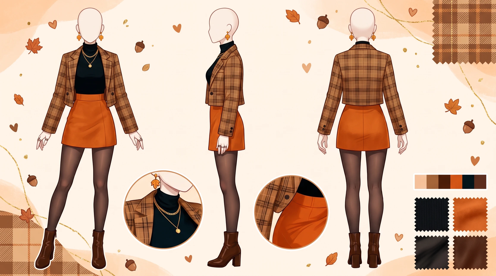
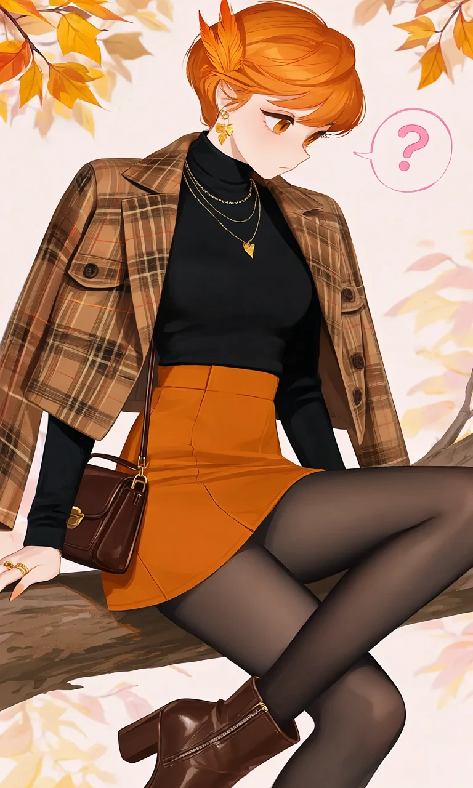
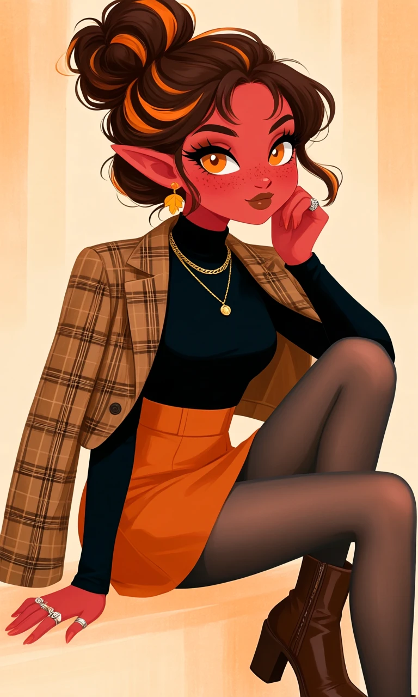

Cider Season

Outfit Prompt
Stylish modern autumn outfit, trendy feminine streetwear, sophisticated fall fashion, coordinated burnt orange, black, and warm brown color palette.
A fitted black mock-neck top with a sleek high neckline, long fitted sleeves, and smooth stretchy ribbed fabric. The top follows the natural shape of the torso and is tucked neatly into the skirt.
A high-waisted burnt-orange mini skirt with a structured A-line silhouette, fitted waistband, subtle front seam detailing, and a hem ending at mid-thigh. Soft brushed fabric with a slightly textured matte finish, creating a polished autumn appearance.
A cropped oversized brown plaid jacket worn loosely over the shoulders, featuring a warm chocolate-brown, camel, black, and muted orange tartan pattern. The jacket has wide notched lapels, dropped shoulders, relaxed long sleeves, decorative dark buttons, and two small front flap pockets. Its cropped hem ends just above the hips.
Sheer black tights with a smooth, translucent appearance.
Dark chocolate-brown leather ankle boots with chunky block heels, rounded square toes, fitted ankle shafts, and subtle side zippers.
Layered delicate gold necklaces in different lengths, including a short fine chain, a slightly longer necklace with a tiny golden leaf pendant, and a simple minimalist chain.
Several elegant gold rings, including thin stacking bands and a small amber-colored gemstone ring.
Small gold earrings shaped like delicate autumn leaves.
A compact dark brown leather crossbody bag with a thin adjustable strap and antique-gold hardware.
Fashion-forward autumn styling, elegant casual layering, warm earthy colors, trendy feminine streetwear, comfortable yet carefully coordinated fall outfit.
Outfit Examples



